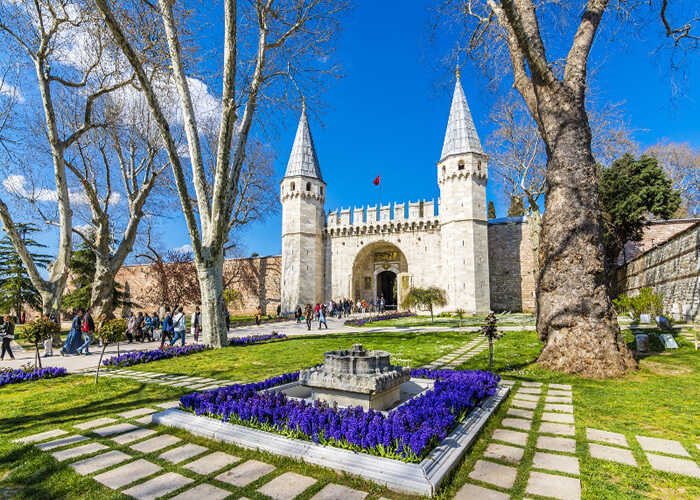

Topkapı Sarayı, İstanbul’un fethinin ardından Fatih Sultan Mehmed tarafından 1460-1478 yılları arasında yaptırılmış olup takip eden padişahların yaptırdıkları ilave yapılarla günümüzdeki hâlini almıştır. Zeytinlik olarak adlandırılan Sarayburnu’nda bahçe düzenlemeleri ve köşklerle başlayan inşaat, Sûr-ı Sultânî (Kal‘a-i Sultânî) adı verilen surlarla devam etmiştir. Saraya uzun yıllar Beyazıt’taki eski saraydan dolayı Sarây-ı Cedîd-i Âmire denilmiş, ardından Toplu Kapı denilen köşkün isminden dolayı Top Kapısı Sarayı adı kullanılmaya başlanmıştır. Zaman içerisinde ilavelerin yapıldığı saray, 19. yüzyıl ortalarına kadar yaşam ve yönetim merkezi olmaya devam etmiştir. 1840’lara gelindiğinde, mevcut sarayın 19. yüzyıl devlet protokolü gereklerini karşılamakta yetersiz kalması sonucu 1843-1856 yılları arasında Dolmabahçe Sarayı inşa edilmiş ve bir süre sonra hanedan için yaşam ve yönetim merkezi tamamen Dolmabahçe Sarayı’na taşınmıştır. Topkapı Sarayı, İstanbul’un en eski tarihî bölgelerinden birinde yer alır. Marmara Denizi, İstanbul Boğazı ve Haliç arasında kalan tarihî İstanbul Yarımadası’nda bulunan saray, İstanbul’un ikonik yapılarından biridir. Sarayburnu’nda bulunan Doğu Roma akropolü üzerindeki 700.000 metrekarelik bir alan üzerine kurulmuş olan Topkapı Sarayı, 31. Osmanlı padişahı Sultan Abdülmecid’e kadar yaklaşık dört yüz yıl süreyle imparatorluğun idare, eğitim ve sanat merkezi; padişahların da ikametgâhı olmuştur. 19. yüzyılın ortalarından itibaren hanedanın Dolmabahçe Sarayı’na taşınması ile terk edilen Topkapı Sarayı, tarihî önemini ve değerini korumuştur. Türkiye Cumhuriyeti’nin kuruluşundan sonra, 3 Nisan 1924 tarihinde müze hâline getirilen Topkapı Sarayı, Cumhuriyet’in ilk müzesi olma özelliğini taşır. Bugün Gülhane Parkı hariç olmak üzere yaklaşık 350.000 metrekarelik bir alan kaplayan Topkapı Sarayı; yapıları, mimarisi, koleksiyonları ve yaklaşık 300.000 arşiv belgesi ile dünyanın en büyük müze-saraylarından biridir. Ana hatlarını büyük avlular ve bunları çevreleyen revaklar ile hizmet binalarının oluşturduğu yapının planının Edirne Sarayı’ndan etkilendiği görülmektedir. Hizmet binaları, taş kullanılarak yapılmış olup çoğunlukla tek katlı ve yüksek kubbeli yapılardır. Konut olarak kullanılan yapılar ise çoğunlukla taş ve ahşap malzemeden yapılmış, kubbeleri kurşun ile kaplanmıştır. Sarayın iç bölümleri ve bahçeleri kurna, havuz, fıskiye, sebil gibi detaylarla zenginleştirilmiş, pek çok sarnıç yapılmıştır. Topkapı Sarayı’nın teşkilât açısından dört bölümden meydana geldiği söylenebilir: Hizmet ve koruma alanı (Bîrun), idarî merkez (Dîvân-ı Hümâyun), eğitim alanı (Enderûn) ve padişahların özel yaşam alanı (Harem). Sarayın, Bizans dönemi şehir surlarına dayanan surları üzerinde ana giriş kapısı niteliğindeki Bâb-ı Hümâyun’la birlikte Demir Kapısı ve Otluk Kapısı adı verilen üç büyük kapısı ve beş adet hizmet kapısı (koltuk kapısı) vardır. Birinci kapı olan Bâb-ı Hümâyun, iki katlı bir köşk kapısı olup üstündeki kitâbede Ali b. Yahyâ es-Sûfî imzası bulunur. İkinci kapı Bâbüsselâm, üçüncü kapı ise Bâbüssaâde’dir. Saray yapıları birbirine geçişli dört avlu ve çevresindeki mimari yapılardan oluşmaktadır. Etrafı bahçeler ve meydanlarla çevrili olan saray yapıları içerisinde Alay Meydanı olarak da anılan ilk avluda Aya İrini Kilisesi, Darphane, Fırın, Hastane, Odun Ambarı ve Hasırcılar Ocağı yapıları bulunuyordu. Sarayın ikinci avlusu, devlet yönetiminin gerçekleştiği mekânların yer aldığı Divan Meydanı, bir diğer adıyla Adalet Meydanı’dır. Tarih boyunca pek çok törene sahne olan bu avluda divan toplantılarının yapıldığı Divan-ı Hümâyûn (Kubbealtı) ve yanında Divan-ı Hümâyûn Hazinesi yer alır. Bu avluda ayrıca Divan yapısının arkasında Adalet Kulesi, Kubbealtı’nın yanında ise Harem Dairesi girişi, Zülüflü Baltacılar Koğuşu ve Has Ahırlar bulunur. Sarayın üçüncü avlusuna Enderûn Avlusu da denilmektedir. Bu bölümde büyüklü küçüklü odalar, padişaha ait Arz Odası, Doğancılar Koğuşu (Şahinciler), Seferliler Ocağı, Kilerli Koğuşu, Enderûn Hazinesi ve Has Oda (Mukaddes Emanetler Dairesi), ayrıca Saray Okulu’na ait yapılar yer almaktadır. Üçüncü avluda yer alan Enderûn’da Bâbüssaâde’den içeri girince sağ ve sol tarafta odalıların koğuşları, sağdan devam edince sağ üst tarafta Fâtih Köşkü ismiyle bilinen hazine kısmı vardı. Sol üst köşede Harem bölümüne yaslanan dört kubbeli taş yapı Has Oda idi. Burası, Yavuz Sultan Selim döneminde kutsal emanetlerin getirilmesinden sonra daha ziyade Hırka-i Saâdet Dairesi ismiyle anılmıştır. Son avlu olan dördüncü avluda da padişaha ait köşkler ve asma bahçeleri yer alır. Bu bölümde Osmanlı klasik köşk mimarisinin en seçkin örnekleri olan Bağdat ve Revan Köşkleri ile İftariye Kameriyesi bulunur. XVIII. yüzyılda inşa edildiği düşünülen Sofa Köşkü ise Lâle Bahçesi duvarına dayalı bir yapı olup Kara Mustafa Paşa Köşkü olarak da bilinir. Bu ahşap köşkün içinde ve duvarlarının üst kısmında meşhur Osmanlı şairi Hâkânî Mehmed Bey’in beyitleri yazılıdır. Sarayın ana kısmı içinde yer alan köşkte nadiren elçi ve devlet adamları da kabul edilmiştir. Köşkün sağında, set üstünde Taş Kule adıyla anılan oda, bir dönem sarayın eczanesi olarak kullanılmıştır. Dördüncü avlunun alt kısmında ise saraya ait son yapılar olan Mecidiye Köşkü ve Esvab Odası görülür. Topkapı Sarayı, 6 Eylül 2019 tarihli ve 30880 sayılı Resmî Gazete’de yayınlanan 44 No’lu kararnamenin ardından Millî Saraylar İdaresi Başkanlığı’na bağlanmıştır. 